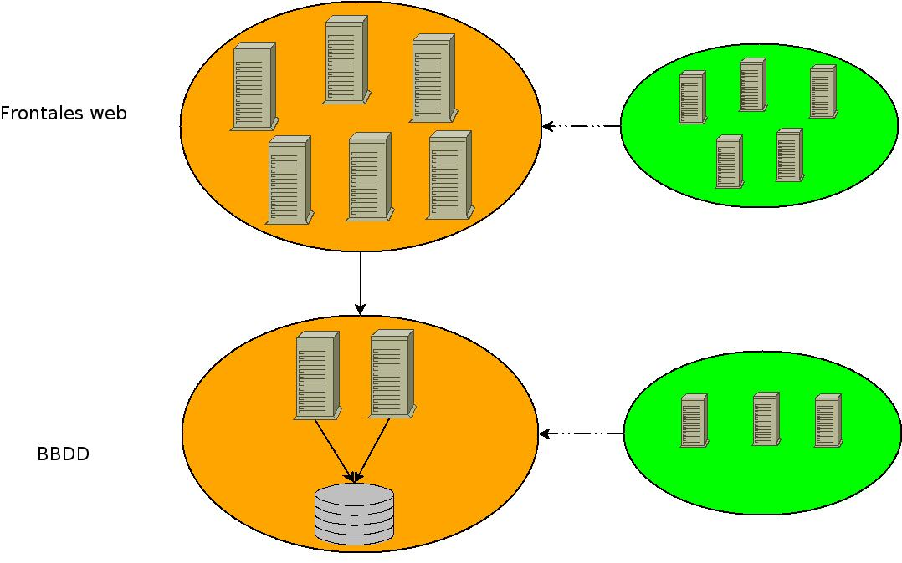

2.2. Escalabilidad
Escalabilidad es la capacidad de crecimiento que tiene un servicio frente a la demanda.
La escalabilidad sólo es ofrecida por:
High Performance Cluster.
Cluster Activo / Activo.
La escalabilidad se logra incrementando el número de nodos disponibles en el cluster.
 | En un cluster activo / pasivo el incrementar el número de nodos disponibles en el cluster no incrementa la potencia del cluster ya que unicamente un nodo estará ofreciendo el servicio.  Escalabilidad de un cluster. |